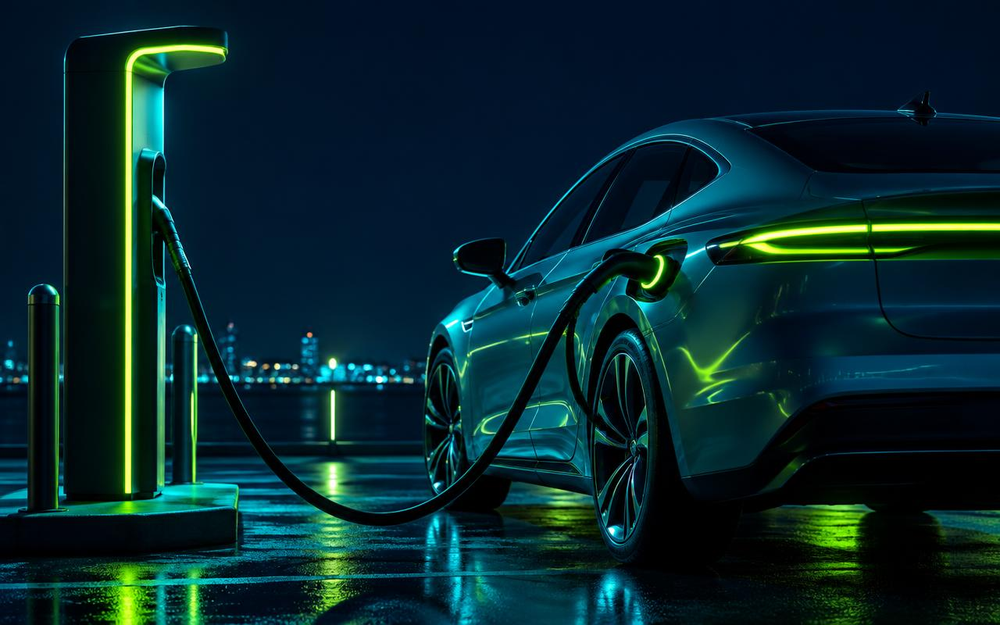

🔋 Bateria
Componente de alto valor que influencia na compra e venda de seminovos.
Elétricos e híbridos
Histórico técnico da bateria, assistência especializada e proteção em um só lugar.

A bateria é a peça mais cara de um carro elétrico. Um número sozinho não conta a história inteira.
Componente de alto valor que influencia na compra e venda de seminovos.
Precisa de conhecimento sobre conectores, autonomia e pontos de recarga.
Guincho e suporte adequados para veículos eletrificados.
Avaliação da bateria, laudos e o Passaporte Energético.
Ver mais →Planos conceituais de proteção pensados para elétricos e híbridos.
Ver planos →Linha do tempo das avaliações da bateria (dados de demonstração).